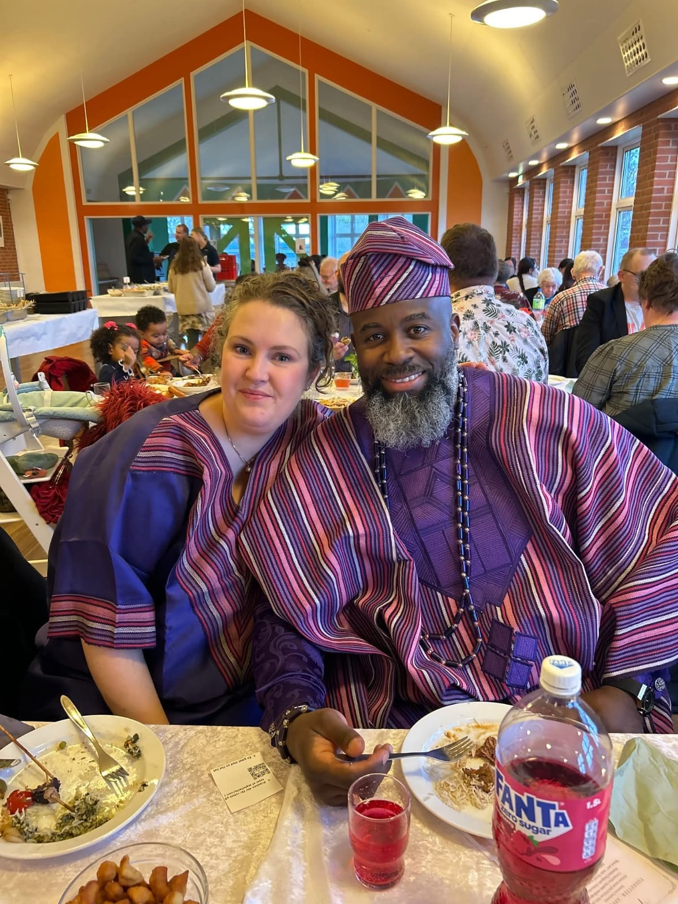

Ledelse
Mød menneskene bag kirken
Mød menneskene bag kirken

Præst
Samuel Christian Tondje er ledende præst i Nykøbing Mors Frikirke. Han blev indsat i denne tjeneste i begyndelsen af 2026 som en del af Apostolsk Kirkes netværk i Danmark. Han er gift med Karin Tondje, og sammen har de fem børn. Samuel Christian Tondje har pastoral erfaring fra Norge og har arbejdet i en international sammenhæng. Hans tjeneste er forankret i den apostolske tradition med særlig vægt på bibelundervisning, menighedsliv og åndelig vejledning. Ud over sit arbejde i kirken er han også engageret i kristen undervisning gennem udgivelse af bøger samt i sociale og humanitære initiativer. I sit arbejde i Nykøbing Mors ønsker han at være med til at udvikle en åben menighed, som bygger på kristen tro, gensidig respekt og engagement i lokalsamfundet.

Daglig leder